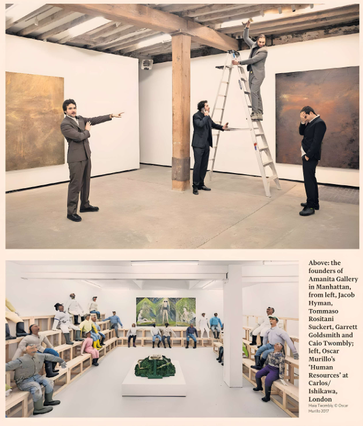
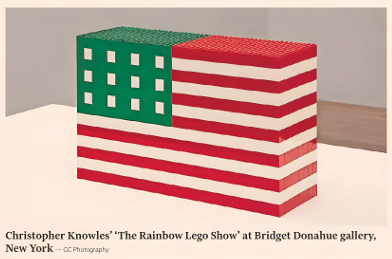

The Art Market | Growth-chasing gallerists are making way for younger dealers keen on collaboration. By Tim Schneider
For more than a decade, sceptics have questioned the paradigm dominating the business of art galleries: an intercontinental network of permanent physical locations, a programme spanning scores of artists and estates and a year-round treadmill of art fairs. But more than two years into the current art-market contraction, the debate has transformed from a lively topic for panel discussions and cocktail parties to a matter of existential risk.
Now, as prominent baby boomer gallerists exit earlier than expected, many of their potential successors are instead working to completely redefine success in the field.
Some of the recent casualties have been shuttered voluntarily, such as the New York investor-turned-dealer Adam Lindemann's 13-year-old gallery Venus Over Manhattan. Others have had little choice, including Peres Projects, the once-tastemaking international gallery declared insolvent in a German court this spring.
But no closure has had more impact than Blum, the international gallery carried forward by Tim Blum after his business partner Jeff Poe stepped away in 2023. Blum announced on July 1 that the business would be "sunsetting" more than three decades after it was co-founded as Blum & Poe in Los Angeles. He described his rationale as "burnout at every level" caused by a system intent on growing "ever outward, upward, onward" after the 2008 financial crisis.
The winding-down of Blum — whose footprint included a Los Angeles headquarters, a gallery in Tokyo and a Manhattan expansion previously scheduled to debut this autumn — has rekindled anxieties about the dealer sector's sustainability. For instance, Blum's peer Stuart Shave, the founder of the London- and Paris-based Modern Art gallery, both rejects the notion of a "dysfunctional system" and acknowledges the perpetual-growth model took off before its effects were understood.
"We are in the midst of a decade-long experiment to see if those extremes of scale are even sustainable, not just for dealers but for artists also," he says.
Yet conversations with multiple millennial and Gen Z dealers suggest Blum's closure has done little to scare the younger generations away from building empires mainly because they were uninterested in that path in the first place.
"Tim Blum's experience does not squarely resonate with mine — it couldn't," says Bridget Donahue, who founded her namesake gallery in New York in 2015. "Early on we established a clear-eyed commitment to five shows a year and one to two art fairs. This was a reaction to my tenure working in bigger galleries; I remember that unenjoyable pace of work. We made a corrective move to protect myself and my artists from the burnout that Tim describes."
Donahue has combined her self-imposed limits on scale and velocity with a priority on what she calls "like-minded, collaborative relationships" with other dealers in different geographies. Together, these strategies shape much of the art world's post-imperial model.
Matthew Brown, who opened his eponymous gallery in Los Angeles in 2019 at age 23, says Blum "was quite important for me" as he "changed the landscape of the city for art". Six years after its founding, Brown's own business comprises two locations in Los Angeles and a third in Manhattan's Tribeca neighbourhood; it also champions rising stars such as Sasha Gordon and Dan Herschlein alongside eminences such as Carroll Dunham. Despite lamenting the loss of Blum's programme, however, Brown says its closing "didn't change my plans at all".
"I don't want to speak for other dealers, but my feeling is that there is more interest in transparency, experimentation and building platforms that reflect the present," he says.
Asked about appealing alternative models, Brown tellingly cites Art Collaboration Kyoto, a hybrid event in which Japan-based dealers invite international peers to share a fair booth—a way to minimise costs while maximising networking opportunities abroad.
"The recent movements in the art world have, if anything, reinforced our gameplan," says Jacob Hyman, one of the four partners in Amanita Gallery in Manhattan. "While the renown and ubiquity of the empire-sized galleries are certainly appealing, perhaps more desirable is the wieldy intimacy of, say, the Matthew Marks or Xavier Hufkens dimension."
When Hyman, now aged 30, considers the trade-offs involved in sustaining a global colossus, he does so from experience. He joined Amanita's management team after four years in sales at Gagosian and now prioritises close co-operation with other dealers and a personalised approach. If or when the gallery expands beyond its two current locations in Manhattan, he says, "I want to know our artists really well and for our collectors to feel like they are part of the story."
"The new model I see emerging is people who, rather than trying to build empires, are trying to build communities," says Marc Spiegler, a strategic consultant for art and culture businesses and the former global director of Art Basel. "They're not trying to build a client base of hundreds of people. They're trying to build a core client base so tight and coherent that a gallerist could literally invite them to a cocktail party at their house."
This strategy's precedents include Sadie Coles. Founded in London in the 1990s, her programme has grown to encompass around 60 artists and two permanent locations (with a new space set to open in October). Coles has also pioneered multiple initiatives to engage younger dealers and audiences—most notably The Shop, a space dedicated to hosting emerging galleries and creative ventures, and Gargle, an ongoing series of cross-disciplinary happenings.
Yet careful planning is not what kept this evolution rooted in London, Coles says. "Looking through the lens of now, a controllable overhead looks smart, but the scale of my gallery is instinctual rather than rational. I always wanted the gallery to be a size that allows me to be completely hands-on with everything, something you cannot do if you have multiple locations across the globe."
This mentality continues echoing into the next generations of gallerists.
"Rejecting the empire-building model for me boils down to: do you grow into essentially becoming a CFO, where your life is being on airplanes getting between your multiple locations to have team meetings about your sales targets instead of ever being in an artist's studio connecting to what got you into art in the first place?" says Vanessa Carlos, the director of London's Carlos/Ishikawa gallery and the founder of the international gallery-share initiative Condo. "I would've just gone for investment banking as a career if that was the goal."
Carlos adds that she and other millennials who opened galleries in the 2010s largely rejected the pressure of the growth-at-all costs model. Instead, they "chose to lean into community, collaboration and DIY initiatives. But 10 years later, so few of us have survived financially."
She hopes the next generation of gallerists may fare better, partly owing to how adeptly they have professionalised the perspective of their millennial forebears. "It's almost like we were a first wave of gritty gentrifiers and they are the second, polished wave."
Tim Schneider is founder of The Gray Market.